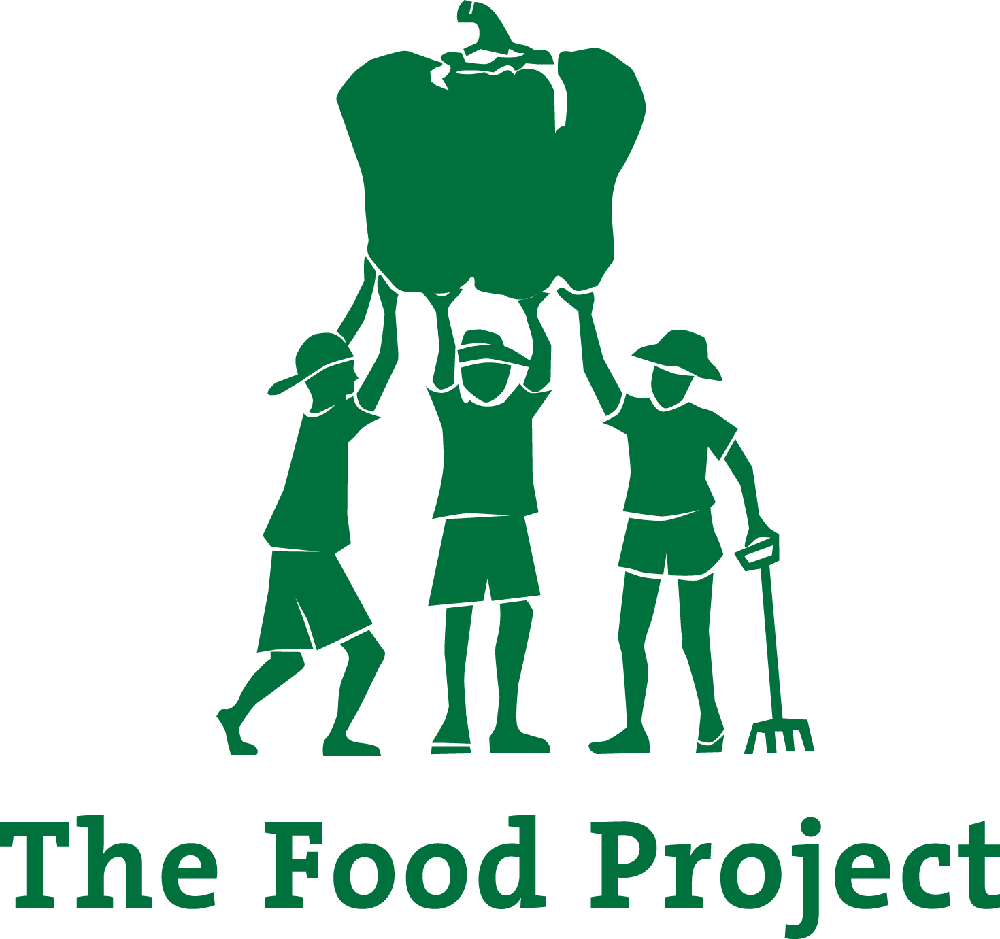

Fall 2026 In progress
The Food Project
A Greater Boston nonprofit that runs farms, gardens, farmers markets, and youth programs. It has grown more than 5 million pounds of produce and built over 1,400 raised-bed gardens.
The challenge
Much of TFP's operational knowledge lives with individual staff, not in documented systems. It also has no long-term plan for its facilities, including whether to sell its 5,000 sq. ft. headquarters.
What we're doing
- Process standardization: process maps, SOPs, and recommendations for digitizing resources.
- Capital planning: a building assessment, maintenance roadmap, and decision matrix for future investments.